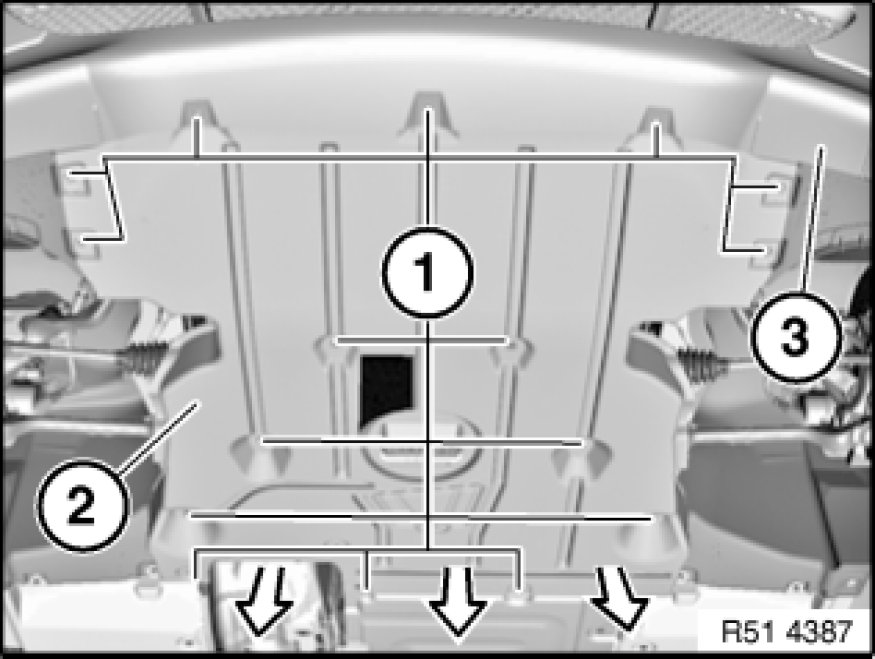
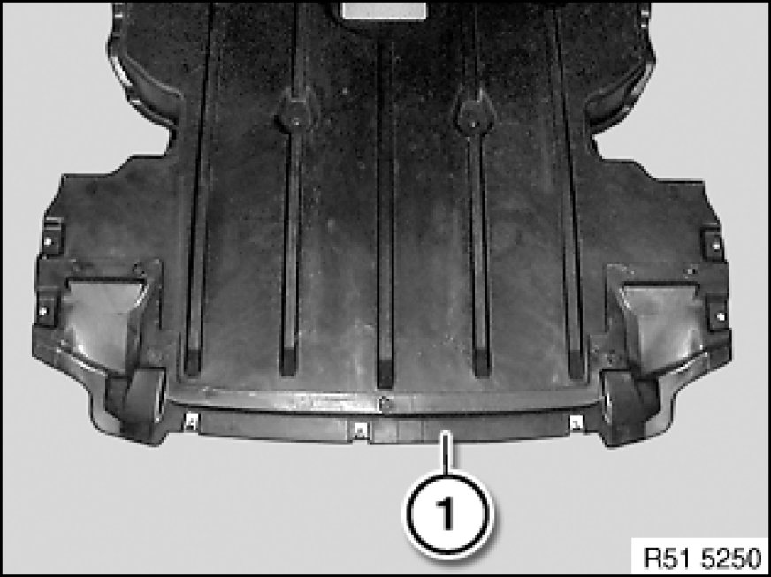

Removing and Installing/Replacing Front Underbody Protection
51 47 490 - Removing and installing / replacing front underbody protection

Note:
Description is shown on the E87 by way of example. There may be differences in detail in the case of other models.

Release screws (1).
Pull underbody protection (2) forward under bumper trim (3).
Installation:
Centre underbody protection (2) and tighten down screws (1).

Replacement:
- If necessary, modify or replace front section (1) of underbody protection
- Modify sheet nuts, replace defective nuts if necessary